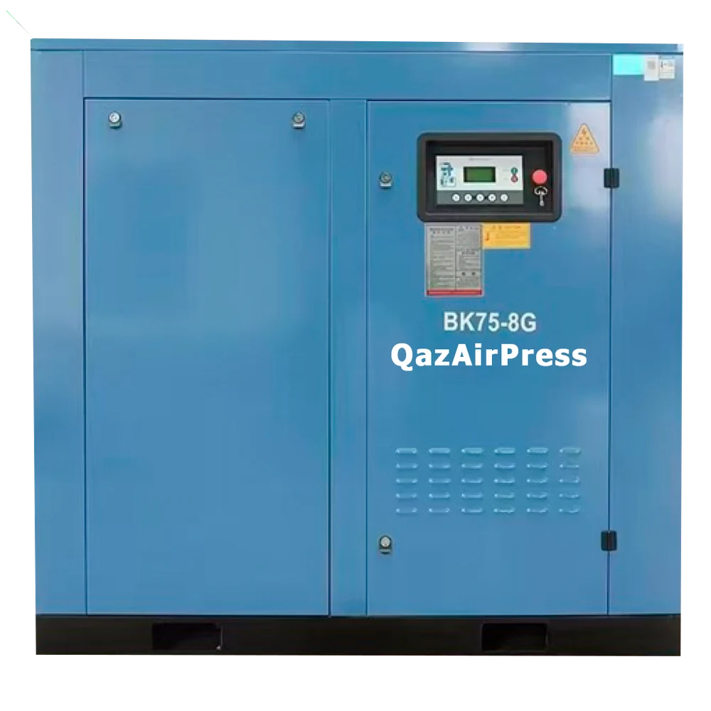
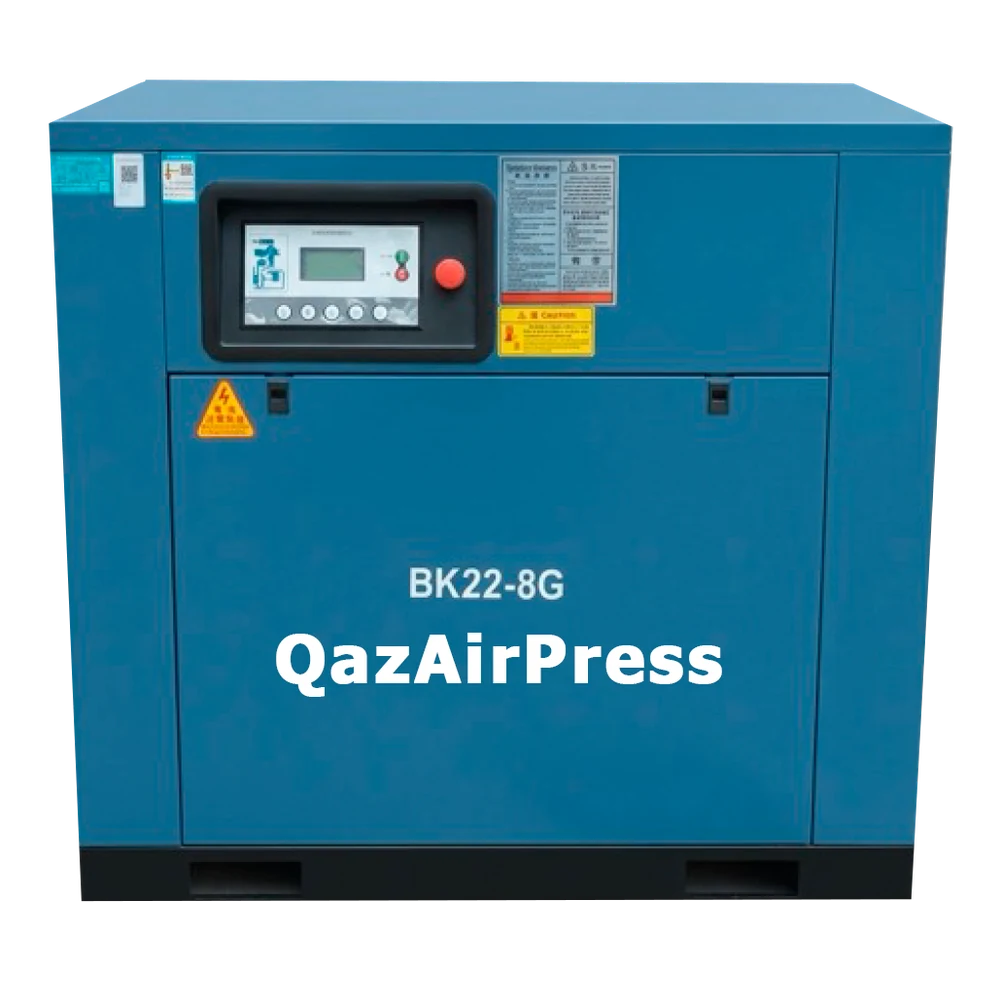

Где пригодится
Рассмотрите для системы, питающей несколько крупных потребителей. Поможем сопоставить расход и давление оборудования, режим смен и условия размещения компрессора.

Компрессор 75 кВт для производств с высоким расходом воздуха. Модель из линейки ABK с производительностью 13 м³/мин по каталогу.
| Мощность | 75 кВт |
|---|---|
| Производительность | 13,0 м³/мин |
| Конечное давление | 8 атм |
| Электропитание по таблице продавца | 380 В / 50 Гц |
| Система охлаждения | Воздушная |
Давление и расход приведены по таблице продавца. Перед заказом подтвердим параметры и исполнение по паспорту оборудования.
В источнике расходятся единицы давления и отдельные поля характеристик. Здесь приведены значения из технической таблицы продавца. Перед заказом сверяем их с паспортом конкретного исполнения.
Посмотреть карточку на Satu.kz ↗Рассмотрите для системы, питающей несколько крупных потребителей. Поможем сопоставить расход и давление оборудования, режим смен и условия размещения компрессора.
Сообщите расход и давление ваших станков, график работы и требования к чистоте воздуха. По ним подберём ресивер, осушитель и фильтрацию.
Укажите город — рассчитаем перевозку и согласуем срок. До покупки уточним состав заказа, гарантию и условия обслуживания.
Как получить расчёт доставки ↗ Винтовые компрессоры
Винтовые компрессоры Винтовые компрессоры
Винтовые компрессоры
Винтовые компрессоры